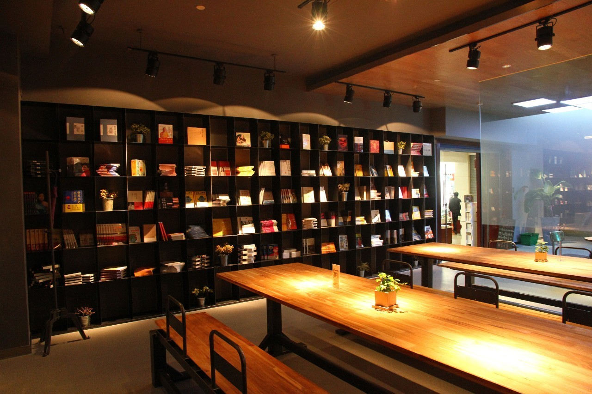

悦览树-一家24小时都营业的书店
2019-5-20
由Good luck 发布
书店咖啡茶
位置:杭州市青年路31号
整体评分:8.0分
人均消费:30元
一、开阔又温馨的设计
大门上悬挂的招牌“Reading Tree Coffee 悦览树”，字形设
设计有跳跃感，蓝绿色的字体也让人感受到勃勃生机。悦览树
24小时书店图书品种20000册，以人文社科、艺术设计和
畅销书为主。
二、富含人文关怀的体验式消费
相较于传统书店,"悦览树"更提倡体验式消费。悦览树的很多细节都可谓非常的贴心。
书店内轻柔的音乐是不可缺少的；品种丰富的食物是悦览树的强项，除了咖啡和新鲜果汁外，我们设计了合适阅读的轻食，如素食沙拉、拉法卷、帕尼尼等简餐，不过于油腻，不影响读书，也不影响旁边读书的人；敞开的Wi-Fi网路为读者提供了上网冲浪的免费体验，这是现代生活的必备，不是说我们提倡纸张阅读后，就拒绝网络了；每一张桌子下面都暗藏USB充电插座，读者不必担心手机和iPad断电。
悦览树还是一个开放的空间，艺术家可以在此售卖富有创意的产品，已有复古CD钟、明信片、复古玩具、英国首饰......
同时，书房还为读者提供图书查询、预定等服务，如果有自己想要的图书，可以直接购买。不久的将来可以实现：通过网络平台提供浙江省新华书店70万种图书的查询、预定等。

三、“不打烊”的读书时光
正式开业后，书房是高朋满座。开业当天，书店以一场“深夜读诗”来迎接书房的不打烊；接下来，童话作家王一梅、媒体人舒中胜、摄影家傅佣军、被称为“太平间的恶魔”的外科医生兼作家安东宁夫、青春文学作家梅子黄时雨、上市互联网公司兼骑行达人张向东、诗人余秀华、知名作家蔡志忠、鲁引弓、苏芩等等，都来书房举行了“悦读会”，新生代的旅行季、美食分享、市集等也陆续推出，所有这些，全部都交给市场去检验。
自2014年5月18日，24小时书房悦览树开业以来，平均一周举行俩场活动，至今已有近百场文化活动开展，所创立的“悦读会”品牌吸引了众多年轻读者，因书结缘共同见证“不打烊”的读书时光，一所杭州市民新的“文化约会地”已悄然形成。
评论